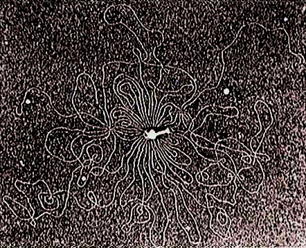

|
T2ファージの頭部を破壊してDNAを外部に露出させたもので、 クライシュミットが1962年に撮影した電子顕微鏡写真

大腸菌には、大腸菌の細胞の中で増殖し、細胞を破壊して、さらに他の大腸菌に感染して増殖を続けるウイルスがある。一般に細菌に感染して、その中で増殖するウイルスをバクテリオファージ (bacteriophage) と呼ぶ。バクテリオファージには細菌に感染して、その中で増殖して細菌を殺し、次々と他の細菌に感染を続ける毒性ファージ (virulent phage) と、感染した細菌内で、細菌の染色体に組込まれ (溶原化という)、細菌と同じ速度で分裂するが紫外線などの照射を行うと、ファージは染色体から離脱して、毒性ファージのように細菌内で増殖して、細胞を破壊して外部に出て、他の細菌に感染する溶原性ファージ (lysogenic phage または temperate phage) とがある。 毒性ファージとしては、T2、T4、T6などTシリーズのファージがよく知られており、溶原性ファージとしてはλファージがもっともよく知られている。ファージの頭部には染色体DNAが存在し、尾部で細菌の表面に接着すると、尾部から酵素が出て細菌の外膜をこわし、ファージ頭部のDNAが尾部を通って細菌内に注入され、タンパク質の外被は細菌外に取り残される。 「基礎遺伝学」（黒田行昭著；近代遺伝学の流れ）裳華房(1995)より転載 |